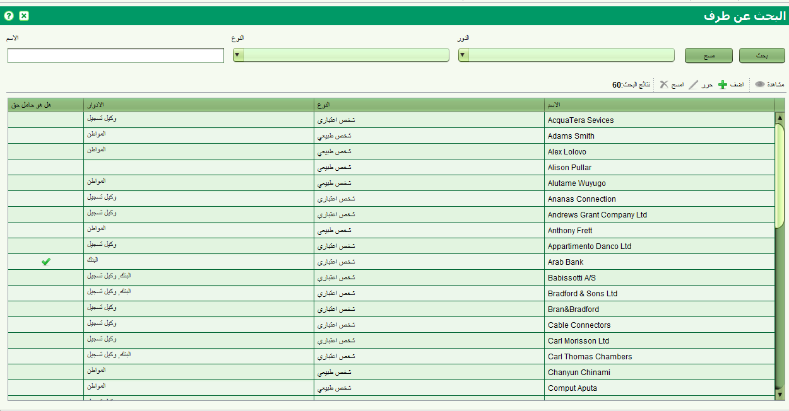

تسمح شاشة البحث عن طرف ايجاد طرف سواء كان هذا الطرف شخصا (شخص طبيعي ) او مؤسسة او مجموعة (شخص معنوي ) والمرتبطين بملكية او معاملة على ملكية. تستطيع أيضا إضافة, تعديل و ازالة او عرض تفاصيل طرف في هذه الشاشة . يمكن الوصول الى الشاشة باختيار طرف – البحث عن طرف  Party or Search > Party
Party or Search > Party

تستطيع البحث باستخدام مجموعة من المحددات مثل الاسم, النوع او الدور. يدعم الاسم المطابقة الكلية او الجزئية. لا يوجد في سولا ما يمنع اوتوماتيكيا من تكرار تسجيل الشخص, لذا قد يظهر اسم الطرف اكثر من مرة في قائمة النتائج
اذا كان حقل "هل هو صاحب حق" عليه علامة , فهذا يعني بان الطرف لديه ارتباط مباشر بملكية كمالك او كاسم طرف له حق اخر على الملكية. الاطراف الذين لديهم حقوق لا يمكن تعديلهم او إزالتهم من هذه الشاشة , بل يجب استخدام الخدمة المناسبة لتغيير تفاصيل اصحاب الحق. باستخدام هذه الشاشة تستطيع اضافة طرف جديد بالنقر على  او تعديل الاطراف ممن هم ليسوا اصحاب حق من خلال اختيار الطرف من قائمة النتائج. سوف يقوم ذلك بفتح شاشة تفاصيل الطرف لادخال التعديلات . من الممكن ايضا اضافة اة تعديل طرف باستخدام وظائف اخرى في سولا مثل اطراف الاتصال , اصحاب الملكيات وحاملي الحقوق.
او تعديل الاطراف ممن هم ليسوا اصحاب حق من خلال اختيار الطرف من قائمة النتائج. سوف يقوم ذلك بفتح شاشة تفاصيل الطرف لادخال التعديلات . من الممكن ايضا اضافة اة تعديل طرف باستخدام وظائف اخرى في سولا مثل اطراف الاتصال , اصحاب الملكيات وحاملي الحقوق.
لازالة طرف موجود , اختر الطرف ثم اضغط على  اذا كان الطرف غير مرتبط بدور من نوع وكيل. مالك او صاحب حق سوف يتم ازالته
اذا كان الطرف غير مرتبط بدور من نوع وكيل. مالك او صاحب حق سوف يتم ازالته
اذا اردت عرض تفاصيل الطرف , اختر الطرف واضغط على 
انظر ايضا